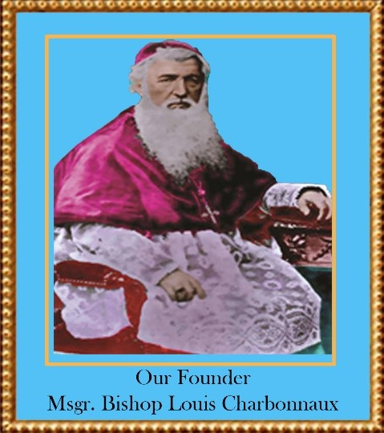

The Founder of the Congregation of the sisters of St. Anne Bangalore (SAB)is Bishop Stephen Louis Charbonnaux, of the Paris Foreign Missions (MEP), the first Apostolic Vicar (1850-1873) of the then Mysore Mission. BishopCharbonnaux MEP born in France came as a missionary to India in 1831. He toiled for the cause of evangelization and education in his newly formed Diocese. He had mastered local languages, published number of Books including the Latin-Kannada Dictionary which has remained as a unique contribution to Kannada Literature.
He was a zealous, courageous, kind, compassionate and humble missionary.
Above all he was a man of prayer with special devotion to the Lord in the Holy Eucharist. After all the busy schedule and strains of the day, he always found time to be in the presence of the Eucharistic Lord to pour out his heart’s anxieties and dreams to his Master who called him as a Missionary to India. He constructed Churches, Seminary to train the local clergy, Schools and Orphanages to educate the young besides being very busy with direct evangelization efforts. One of his best contributions to the Catholic Church is Founding a Religious Congregation for the Sisters under the patronage of St. Anne the Mother of Mary, the Mother of the Universe. Through this Congregation thousands have come to know Christ and have embraced Christianity as their religion in the distant lands of the Country. The steadfastness of faith that they had shown in times of Christian persecution has begotten many martyrs to the Church and their love for Christ is an inspiration for all of us.
May his Missionary spirit permeate in our life and ministry to bring many more to the Christian fold.